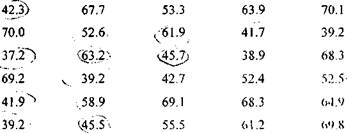

Вправи і завдання до розділу 1
І Прийміть рішення
1. Щорічно журнал "Фортуна" публікує перелік 500 відомих
корпорацій, що досягли найбільших обсягів продажу різноманітних
товарів та послуг. Як помічник начальника відділу менеджменту та
торговельних операцій, ви намагаєтесь проаналізувати оприлюднені статистичні дані обсягів продажу цих фірм, але вважаєте, що звичайне перерахування всіх видів товарів та послуг, реалізованих на ринку, неефективна процедура.
Тому, ви маєте вирішити, яким чином узагальнити статистичні дані, щоб аналітики вашої фірми змогли проникнути у суть даних, оцінити значущість кожної позицій, що стали невід'ємними компонентами успішної діяльності цих корпорацій. Обміркуйте своє рішення та опишіть технічні особливості варіанту, який ви пропонуєте.
2. Як завідуючий кредитного відділу мережі великих універсальних магазинів, ви маєте вирішити, як упорядкувати інформацію відносно кредитних тенденцій ваших постійних покупців.
Інформація вибіркових даних базувалась на двох факторах, а саме:
сімейний статус покупця (заміжня, розведена, одинока, вдова для
жінок і аналогічно для чоловіків) і тип кредитної картки, що
використовується найбільше (VISA, MasterCard та ін.).
В якій формі, на вашу думку, доцільніше зобразити одержані статистичні дані, щоб корисність була найбільшою.
3. Як новому співробітнику великої комп'ютерної компанії, Вам
доручено підготувати детальний звіт про діяльність вашої фірми
інвесторам, які не зовсім розуміються на статистичних поняттях.
Обміркуйте і оберіть методику, якою ви скористаєтесь для розв'язання вашої проблеми.
II Концептуальні питання
а) Частотний розподіл;
б) Накопичений (кумулятивний) частотний розподіл;
в) Розподіл відносних частот;
г) Гістограма;
д) Полігон.
Які будуть обмеження границі інтервалів частотного розподілу, що можуть ефективно впливати на обробку неперервних вибіркових даних як противаги дискретних?
III Вправи і завдання
9. Вибіркова множина містить 130 спостережень. Приблизно визначте, скільки інтервалів може мати розподіл частот?
10.Відомі дані про час (в хвилинах), витрачений 30 студентами на виконання контрольного тесту.

Визначте наближену кількість класів розподілу.
11. Визначити ширину класу у завданні 10.
16. Визначити згрупований розподіл "більше ніж" накопиченої відносної частоти для даних завдання 10.
Для заданих вибіркових даних
а) 14, 8, 8, 16, 24, 24, 14, 16, 24, 16, 24, 8, 24, 24, 8, 24, 8, 24, 24.
б) 12, 18, 10, 6, 12, 12, 18, 6, 10, 12, 18, 10, 12, 12, 18, 12, 18, 12, 12, 12.
в) 4, 4, 16, 10, 8, 4, 10, 8, 4, 16, 16, 4, 8, 16, 4, 4, 16, 4, 4, 4.
г) 14, 6, 20, 8, 14, 14, 6, 8, 20, 6, 14, 14, 8, 14, 8, 4, 14, 14, 14.
Скласти розподіл частот, відносних частот. Побудувати полігон частот.